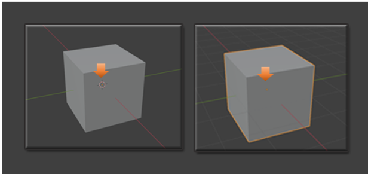
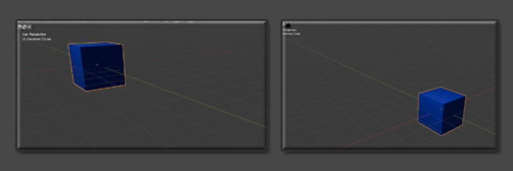

~ The Sub - Menu Part 3~
2/10/2025
The Drop- Down arrow at the End of the View Menu Items
The Gizmo Tools and right-side Tool options
Visibility, and Select-ability
The first one has to do with visibility and select-ability of the different elements on the viewport screen.
This can be very important because if you have an item in the way of another, you can hit the eye (in this dropdown menu) and turn it off. Notice that the eye is also available in the Scene collection and you can hide something from view here too.
Now the select-ability icon is the one that looks like a little white arrow. This is important too, because if you do not want to move or interfere with an object on the screen, and you like it just as it is, you can hit the arrow and then it is locked, and cannot be messed with.
You can also do this from the Scene collection panel, but you must first open a menu at the top to get to it. Open the menu that looks like a funnel at the top of the Scene collection and you will see it.
Click on the item on the viewport that you want to make non-selectable and then hit the little white arrow, as shown in the image below.
The Viewport Gizmos
This one has to do with turning on the Viewport Gizmos. These are the images that show up in the viewport that help you be able to manipulate your object. They look something like this.
Just check and uncheck the different boxes, in the dropdown menu, to see the Gizmos disappear.
Viewport Overlays
This first section, inside the Viewport Overlay’s section, will enable you to turn on and off the floor Grid
Another section which can be used in this part is to turn off the 3D cursor, which can sometimes get in the way when we are trying to fine tune our 3D models.

Those are pretty much the most important options in this Viewport Overlay part.
Viewing Mode Options
This next section of menu items will deal with the different viewing modes.
These Menu Item Buttons Are:
- Transparent
- Wireframe
- Solid
- Material
- Render
These are all of the different Viewing modes in which you can set up your 3D model. Now you can turn on Transparent view to work with both the Wireframe mode and the Solid mode, which comes after it, but you will find out that this mode of Transparent will be disabled, and greyed out if you go into Material Mode View, or the Render View. That is because these two views will deal with the materials and render will deal with sunlight and shadow, and transparent makes little sense when wanting to test in these modes.
You can use Solid and Wire View mode also with out the Transparent button turned on and then you will not have them be see through. It just depends on what you want.
Wire Frame
Solid
Material
Material, will show us our Material color that we added to the object in the Shader Workspace
But when we are in Solid View, we still only see that gray looking Cube, even though we set up the color.
It is not until we move over into the Material View mode, before we can see the color that we added.
Render View Mode
Render View mode will give us our shadows and highlights, and it is the way it will look when we render the object out, from the Render Menu.

The Drop- Down arrow at the End of the View Menu Items
You will find that you have a tiny little arrow at the end of the View Menu Items.
If you try and use this dropdown button while in Wireframe, Material or Render mode, you will only be presented with this simple dropdown, which really doesn’t do too much.
It isn’t until you turn on the Solid mode, and hit this arrow button. That you get some interesting stuff in the dropdown.
The most interesting part of this drop- down menu is the Section under Color. You can have that Material button selected, and then click on the Single button, and select a color. This only gives you a fake color and you can only view it in the viewport when you are in solid mode, you will find if you go to material or render mode, that your color disappears.
See you have a color swatch that you can choose a color to view in solid mode, when you click on that Single button.
Change it to a red here, and the cube changes color, but as I said, only when we are in Solid view mode.
But go back to Render view mode, and you will find that it is still showing the color that we applied to it the right way, by doing it through the Shading Workspace, and applying the color on a node. Remember, there we applied a blue color.
The Gizmo Tools and right-side Tool options
Just hit one of the colored arrows to spin the view of the object around.
This little colored Gizmo, is used to spin your object around in all different directions. Click on each of the colored arrows to spin your cube around in the viewport.
Right side Panel Gadgets
Now this is nice, although, for moving around in the viewport, you may find your middle mouse tool, to be faster. But here you have a zoom tool, a pan tool, a camera view tool, and the grid, toggle on and off Orthographic and perspective view button.
Zoom
Hold down on the Zoom button on the right-hand side and then just move the mouse around to zoom image, with the left mouse button instead of the middle mouse wheel.
Pan
Hold down the Pan button on the right-hand side and then just move the mouse around to pan the image, with the left mouse button instead of the middle mouse wheel. Panning will not move the image itself from the spot it is in, it will only move your view around on the screen. This is helpful if you are trying to view the object at a different depth, but don’t want to upset your placement of the object in the scene.

Camera View Button
If you click on the Camera, you can view your object in Camera View
When in Camera view, you will see a lock under the camera. Here you can lock the cube inside of the camera or allow the object, to move around.
Make sure you come out of Camera View, by clicking on the button again to toggle out, and to see the Grid button
The Grid Button
The Grid button will toggle on and off Orthographic and perspective view
Click on the grid, and watch the grid floor change the box from a straight on view to the perspective view. Click on the button to toggle between Orthographic and Perspective views.

The Right Click Menu
The right click menu in the viewport is the last thing that we will look at this this Sub menu series. Of course you do have that huge panel at the right. But that is best to go into slowly during some future lessons. This right click menu is also quite large, but I will give you an introduction to it here.
You will see that you are able to do things, like shade the object smooth, duplicate the item, copy it, rename it, insert keyframes, and a whole lot more. The further you get into this program the more you will appreciate the easy availability of this right click menu.

Well, that brings this week’s subject matter to a close. Next week, I hope to introduce you to doing something inside of Object mode.